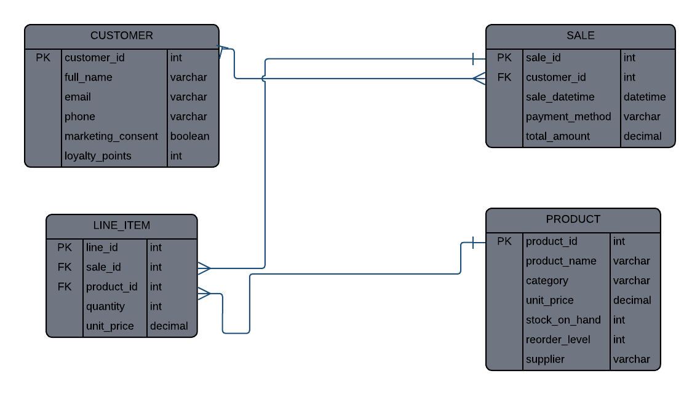

Topic 1: Data and Information Management
Daily Retail Operations described by DIKW
The Data, Information, Knowledge and Wisdom (DIKW) pyramid, is used to illustrate the relationship between these concepts and manage data or information in a construct. This pyramid or hierarchy consists of four different levels that facilitate understanding and quick decision making.
Data lies at the bottom of the pyramid, and it refers to raw facts including numbers, text or symbols as data is the symbolic representation of observable properties. For example, each time a transaction happens a system scans the information and stores it as raw data.
The layer above the data is where. Information is data that has been processed or organized to give the data meaning. For example, the number of products or units sold on a certain day arranged by a certain category.
Above information we encounter knowledge, knowledge is where the information gets analyzed and can then be used to answer questions or to solve problems regarding retail operations. For example, the demand for a product rises, and a store runs out of products before another delivery of that product is scheduled, to fix this the store would order a larger amount of the specific product.
At the very top of a pyramid is wisdom, wisdom is where experience and knowledge help the owner of a retail operation make quick and informed decisions. An example being, a retail store owner increasing the order amount of a certain product they think is going to sell, with the risk of having leftover products in mind.
The Seven Information Quality Criteria
To guarantee that the information systems used in the retail business help make decisions based on correct and appropriate information, data should be evaluated based on the seven criteria, which can be divided into four basic groups:
-
Group 1.
Intrinsic Quality (quality of the data regarding its nature regardless of the context)
- Accuracy: Degree to which data represents actual reality of the retail transactions (for example, the system captures the correct price charged during checkout).
- Believability: The extent to which employees and management believe that the data is credible.
-
Group 2.
Contextual Quality (quality of the data relative to its usage context)
- Relevance: Data should be relevant to the task being conducted in the retail store (such as looking at the local weather forecast when planning the number of hot drinks).
- Timeliness: Data should be up to date and available right when it is needed for decision-making process.
- Completeness: All fields that need to be filled in to complete the transaction/report should have the necessary data entered.
-
Group 3.
Representational Quality (The way the data is represented)
- Uniform Representation: Making sure that the data is represented consistently in all the integrated software (all of them use the same date and currency formats).
-
Group 4.
Accessibility Quality (The ability to access data)
- Accessibility: This refers to how fast and easy it is for authorized personnel to access the data required while keeping the security barriers intact.
Entity Relationship Diagram
The ERD is uniquely designed for the SME retail sales and inventory management system with four relational tables.

- The CUSTOMER table contains key customer information for loyalty tracking and marketing purposes. The table has customer_id as the Primary Key (PK), and full_name, email, phone, marketing_consent (for POPIA compliance), and loyalty_points.
- The SALE table contains data about each separate transaction made. It has sale_id as the PK, and sale_datetime, payment_method, and total_amount. The table has customer_id as a Foreign Key (FK) linking it back to the CUSTOMER table.
- The Product table acts as the active inventory database for the retail shop. Product_id is the PK in this table, which is also assisted by product_name, category, unit price, stock on hand, reorder level, and supplier information.
- The Line_Item table acts as the junction table solving the many-to-many relationship between sales and products. Line_id is the PK in this table, whereas sale_id and product_id serve as the FKs.
The one-to-many connector from Customer to Sale suggests that a customer can make zero or multiple sales in the future; however, a sale belongs to one and only one customer. Similarly, the one-to-many connector from Sale to Line Item shows one sale can contain one or many line items (products bought during the sale). The one-to-many connector from Product to Line Item also shows that a particular retail product can be present in multiple line items in various customer sales.
Design and Pedagogy of Reasoning
Data mismanagement, such as data input errors in spreadsheets and inventory loss that is not accounted for, is the main issue that small retail organizations face in terms of operations. Topic 1 was chosen to show non-technical owners how transactional data gets transformed using the DIKW paradigm into retail knowledge. Also, using an ERD and sales dashboard, we show how relational database tables remove data redundancy and allow one to see stock levels instantly.